記事・リンクを検索
⌘K
ソフトを問わず、背景・環境制作に関するチュートリアルやリファレンスをまとめています。Houdini以外の事例も含む、上位互換のまとめページです。
140 件のポストを収録 · 最終更新: 2026-09-06

Spade&Co. 木川裕太氏による個人制作「Island」の技術解説記事。

Houdiniを用いたモデリングからレンダリングまでの背景制作ワークフローを体系的に学べるコース。
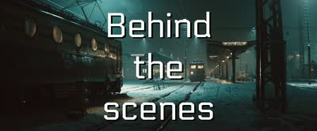
Marcel Haladej氏による、スロバキアのポヴァジュスカー・ビストリツァ駅を描いたCG作品のメイキング。9歳の頃からの構想と2005年の初挑戦を振り返りつつ、リファレンス写真や図面をもとにした最新版の制作を、モードボードからテクスチャリング、完成後の実地訪問まで解説している。
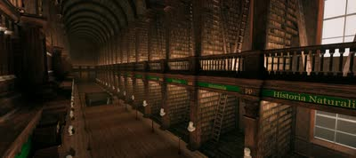
3D StudentのHugo Boussard氏が、Houdiniのプロシージャルモデリング練習として、ダブリンのトリニティ・カレッジ図書館「The Long Room」をフルプロシージャルで再現した作品をArtStationで公開。全体の縦横比から棚の増減まで調整可能なシステムをHoudiniで組み、UVとマテリアル属性付きのFBXとしてUnreal Engineに書き出している。
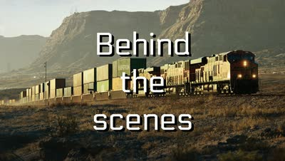
Marcel Haladej氏による、アメリカの砂漠を走るBNSFの貨物列車を描いたCG作品のメイキング。旅先での着想からリファレンス収集、DEMベースの地形、Forest Packによる車の配置、コンテナのテクスチャ、シーンアセンブリまでをスライドと動画で解説している。

海外のCGアーティスト向けYouTubeチャンネル「CG Forge」で紹介された、杉﨑亮太氏の自主制作「Breath of the Ancient Earth」。制作プロセスのQ&Aと、普段の作品収集・リファレンス管理についてもnoteでまとめられている。

3D Environment Artistの四维惰性氏による記事「Rock and Stone Concept」。長年の経験に基づく岩のスカルプトアプローチを、シルエット・バランス・構図の観点から詳しく解説している。

Houdini内でプロシージャルに植生を生成できるツールキット「Natsura」。インポート/エクスポートの手間がなく高品質で、いわば「SpeedTreeのHoudini完結版」だとしている。KTT（Gaea相当）同様、Houdini内で完結するツールが増えている傾向にも触れている。

Blender 4.4とHoudiniで西部劇風の列車アニメーションを作る30分の回と、Blender 4.3で街路の環境を作る47分の回。

Naughty DogのSenior Environment Artistによるウェブサイト。UEなどの無料チュートリアルが見られるほか、Gnomon Workshopでも2つのチュートリアルを公開している。

Blenderを用いてセミプロシージャルに制作された背景作品「Port Town」の制作手法を、動画クリップ付きで解説するブレイクダウン。

『アバター 伝説の少年アン』をテーマにした複数の作品がArtStationで公開されていること。

ILMのSenior GeneralistであるSteffen Hampel氏による最新チュートリアル「Gotham - Full CG Breakdown」（CG Lounge）。

Samuel Krug氏によるチュートリアル「How I Created a Massive Coastal Mountain Scene in 3D」。技術的な側面だけでなく、書籍の描写を基にした再現や試行錯誤の過程も見られる点をおすすめしている。

Samuel Krug氏による、細部までディテールが詰め込まれた高品質な作品。ArtStationやInstagramでの最新作フォローを勧めている。
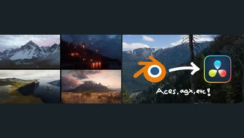
背景アーティスト4人が視聴者の質問に答えるライブ配信と、BlenderのEXRレンダーをDaVinci Resolveで同じ色に揃えるワークフロー解説の2本。

Blenderでシネマティックな大気感を作るチュートリアル。ライト、影、空の作り込みと、ポストプロダクションでの仕上げを扱う。

重いシミュレーションに頼らず、プロシージャルなシェーダーノードだけで海面を構築する手法。シネマティックなショットや環境向けの内容。
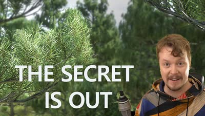
Unreal Engine 5.7で、既製アセットではなく自作の植生をNanite対応させる手順を扱う30分強のチュートリアル。

道路建設のために切り崩された崖と、自然な崖との違いについて解説するKevin Baker氏の記事。

William Fiorentini氏による最新チュートリアル「Glacier Breakdown and Project file」がCG Loungeで公開されたこと。

Clint Jones（Pwnisher）主催の3Dコミュニティチャレンジ「Rampage Rally」への応募作のブレイクダウン映像。

ILMやDNEGでの勤務経験を持つSteven Corman氏が、Double Jump Academyで新しい背景制作チュートリアル「Advanced Matte Painting」をリリースしたこと。使用ソフトはHoudini、Maya、Gaea、Nuke、Photoshop。

コンセプトアートを3Dで立ち上げていくシリーズの第1話。「RAFT」を題材に制作過程を追う内容。

Gaea 2でTransform、Canyon、Lakeなどのノードを使い、2つの山の間に大きな川を通す手順のチュートリアル。

実地形生成HDAの正式リリース。アメリカ国内では1m/pixelまたは10m/pixel、世界中では30m/pixelの解像度で地形を生成できる。SplatmapsはMeta SAM AIかカスタムのPython HDAで生成できる。

HoudiniとUE5を使って精緻な蓮（Lotus）のシーンを制作した過程を解説する80lvの記事。ArtStationにも制作ブレイクダウンが公開されている。

80 Levelが公開している、Houdiniで作られた岩・石のブレイクダウン映像。映像はJulien Rollin氏の提供。

雲の表現が印象的な作品を集めた分析（毎日作品分析Day27）。

Cinema 4DとOctaneを使った背景制作チュートリアル「Environment Creation using Octane and Cinema 4D」。Houdiniのプロシージャル技術などを除けば、ツールに依存しない学びが多いという考えも添えている。

背景制作において広さを感じさせるスケール感の演出についての分析（毎日作品分析Day25）。単純に広い空間にスケール比較用の人物などを置くだけでは十分ではないという考察から始まっている。

岡崎昇平氏による、地形生成以外のHeight Fieldの変わった使い方を紹介する記事。Height Fieldが軽量でUVも扱いやすく、booleanのshatterに適しているという点が勉強になった。

大規模な背景の中にワンポイントで赤を入れることで主役を際立たせる手法についての分析（毎日作品分析Day18）。赤という色自体が、ワンポイントでも強さを感じさせる効果があるという気づきが記されている。

手前から奥へ波打つ手すりと屋根のカーブが視線を誘導し、その終点に人物を置いた構図の分析（Art of Composition Day14）。直線ではなく曲線で構成することで人工物でも有機的で温かい印象になる点、外へ広がる木々が閉塞感を消し、明度と密度のコントラストが左奥への奥行きを作る点を挙げている。

UbisoftやEAで勤務経験のあるEnvironment Concept Artistによるチュートリアル「The Lost Soldier - Environment Concept Design」（Wingfox）。BlenderとPhotoshopを使い、主にデザイン面にフォーカスした内容。

バザールの屋根のラインが中心下部に収束し、遠近感を出しながら門へ視線を誘導する構図の分析（Art of Composition Day13）。斜めの光が門全体のディテールを見せる効果、人物から人混み・門・鳥・空へ段階的に視線が上がる設計、影のフレーミングと電線の横ラインによる安定に触れている。

左の建物の三角構図が安定感と権威を、橋と夕日のV字構図が人物への視線誘導を担う都市背景の分析（Art of Composition Day11）。道路の視線誘導ラインによってマクロからミクロへ流れる読み順、木のシルエットと陰をフレームとして使う手法を挙げている。

手前の羊と人物をスケールの基準に置くことで奥の建築物の巨大さを一瞬で伝える構図の分析（Art of Composition Day12）。丘の起伏が重なるレイヤーで奥行きを作り、光の当たる3つのポイントで視線がループする設計を読み解いている。

S字構図の川が流動感を与えつつ奥へ視線を誘導し、視線の終点が始点に接続してループする構造の分析（Art of Composition Day10）。同形状の岩の反復が生む視覚的リズムと、拡散光とエッジの効いたハイライトという光の質の違いで主役を分離する手法に触れている。
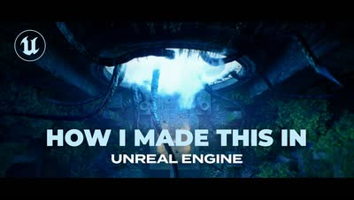
Kitbashのコンテスト「Secrets of the Luminara」向けに、有償・無償アセットとプラグインを組み合わせて約3週間で作った短編のブレイクダウン。

Houdini 20のKarma XPUでレンダリングされた夜の都市シーンの制作途中の映像。11秒の短いクリップ。
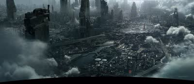
高密度と低密度を分けた密度のコントラストで視線を誘導しつつ逃げ道も用意した都市のエスタブリッシングショットの分析（Art of Composition Day8）。手前の雲が作るレイヤーとフレーム効果、建物の高低差が生むリズム、身近な建築物をスケールの基準として観客に与える手法に触れている。

山や岩、川の線が中心へ向かい、対峙する二人の間を視線が往復する構造の分析（Art of Composition Day7）。傾いたカメラが生む緊張感、空のネガティブスペースが作る「間」、鳥のモーションブラーによって中心人物の時間の流れが相対的に遅く感じられる効果を挙げている。

Steffen Hampel氏による『Fallout』のファンアート最新作。レンダリングがくっきりしていて美しくリアルだと評している。

Matt Barker氏による、リファレンス写真からHoudiniでScatterする手法。写真をカメラプロジェクションし、そこにScatterして写真の色をポイントに持たせ、木のタイプに応じてポイントをソートするという3ステップの流れが解説されている。

Darek Zabrocki氏の作品「Windmill Town」（毎日作品分析Day4_2）。物量・クオリティともに圧倒的だという気づきが記されている。

『アサシンクリード シャドウズ』で使用された、2Dマスクから3Dモデルを生成するHDA「Procedural Rock Wall Tool」。写真から岩壁のマスクを作り、Houdiniでディテールを追加後、Zbrushでさらにディテールを足すワークフローが採用されていたと推測している。

Raphael Lacoste氏『Norse Church : AC Valhalla』の分析（Art of Composition Day3）。ストーリーを左から右・手前から奥へ流し、大きさの異なる要素を段階的に配置することでスケール感とレイヤー構造による奥行きが生まれると述べている。自分の写真だけでなく他の作家の作品分析へ軸足を移す宣言も添えられている。

Blenderで作ったシネマティックな環境ショットの制作過程を、リファレンス集めからライティング・仕上げまで17分で解説したブレイクダウン。

Darek Zabrocki氏による、Octaneと3ds Maxでディスプレイスメントを活用した都市景観制作チュートリアル。

Voronoi Fractureでレンガ壁をランダム化する回、KarmaでUVWランダマイザを組む回、Houdiniで機械的なリグにカスタムコントロールを付ける回の3本。

木の葉のレンダリング時間を、Geometry（16秒）、Stencil（27秒）、Opacity/Texture（2分35秒）の3手法で比較検証。Solarisでは、Scatterする場合はAlphaでモデルをカットアウトし、それ以外はOpacityなしで使うのが最適ではないかと考察している。

作品「Gate to the Afterlife」の制作全工程を追った動画。

リアルタイムでオブジェクト同士のインタラクションを計算するUnreal Engine用プラグイン「Advanced Environment Interaction」。

Megascansなどのスキャンアセットを組み合わせることで、低コストでリアルな岩や崖を制作できる手法（参考動画つき）。同じ作品で、崖に草を生やすマスクをNormal+AO併用で作るとよりリアルになるというTipsも。

8129×8129pxの64km²地形をUnrealエディタ上でリアルタイム編集する自作Houdiniツールチェーンのショーリール。計算の大半をGPUで処理している。
Sony Santa MonicaのJon Arellano氏が、モジュラーキット制作をキット理論から実演まで扱う1時間半の講座。ハードサーフェス／オーガニック両方のパイプラインを解説する。

SpeedTreeの新しいジェネレータ2種を解説。樹皮の外側にハイポリのディテールを加えて、不自然な規則性や繰り返しを隠す用途を扱う。

大規模な環境制作をマスターするためのTipsをまとめた記事。

3ds MaxのForest Packを開発するITOO SOFTが公開している背景制作のTips。使用ソフトが異なっても根本の考え方は共通するため勉強になるとしている。

Gaeaを使った地形制作を詳しく解説するチュートリアル「Gaea Breakdown: Yukon River Valley」。ここまで詳しい解説は珍しいとしている。
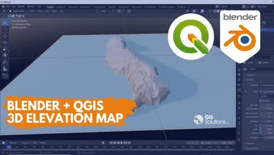
QGISからDEM（数値標高モデル）とマップテクスチャを書き出し、Blenderに読み込んで3Dの標高モデルを作る手順の解説。

植物が空間の空いている方向に伸びる性質をCGで表現することで、よりリアリティが増すというテクニック。

Naughty DogのPrincipal Environment Artistによる、『The Last of Us Part I』の制作ブレイクダウン（ArtStation）。

環境アーティスト向けの22のプロTips集をまとめた記事。

Steffen Hampel氏の新しいチュートリアル「Sicario - Full CG Breakdown」がCG Loungeで公開されたこと。

高品質な作品を多く手掛けるDusso氏のウェブサイト。

Gaeaでフォトリアルな火星のクレーターを8分で作る回と、Houdiniでの積雲のセットアップを未編集で見せる約1時間50分の回。

映画『アバター』や『アリータ：バトル・エンジェル』のプロダクションデザイナーを務めたDylan Cole氏のウェブサイト「Dylan Cole Studio」。

Jakub Bazyluk氏による都市デザイン作品「Circles」の制作ブレイクダウン。
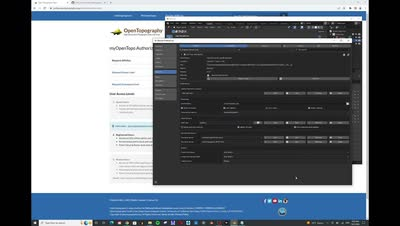
OpenTopography側のAPIキー必須化でBlenderGISの標高データ取得が失敗する問題を、設定を書き換えて解消する手順の解説。

無料で入手できる22個の木のアセット。

PixarのEnvironment Leadによる、USDについて解説した動画「USD Building Asset Pipelines」。

背景作品で高い評価を得ているMarek Denko氏のウェブサイトとArtStation。

Everything Procedural Conference 2022の講演。『The Matrix Awakens』の都市を作ったプロシージャルな手法を、道路網の設計から小物配置まで概観する。

松の木を生成できるHoudini用HDA「Pine Tree Generator」が年内にリリース予定である。

State of Unreal 2022のテックトーク。『The Matrix Awakens』の都市を、UE標準のプロシージャルツールとHoudiniワークフローの組み合わせで生成した手法を解説する。

HoudiniのHeightfieldの面白い活用方法を解説するチュートリアル「Hacking Heightfields」。

Houdiniを使ってプロシージャルに道路網を生成するチュートリアル。

pwnisher氏が下水道環境にディテールを足していくライブ配信。継ぎ目のないコンクリートを作るカスタムテクスチャの手法などを扱う約4時間の内容。

Steffen Hampel氏が雪の道路シーンを制作したプロセスを解説した記事「Sunny winter Road scene using V-ray & Nuke」。

Blenderで制作されたヨーロッパの都市景観作品のプロセスを解説する80lvの記事。スキャンアセットからパーツごとのアセット制作方法などが学べる。

幻想的な世界の環境制作を学べるコース「3D Environments: Create Otherworldly Fantasy Lands」。最終レンダリングはClarisseだが、Maya・Houdini・Nukeについても学べる内容。

Houdiniを使って映画『君の名は。』のPVの背景をフル3Dで再現した制作過程を解説するnote記事。まだ全部読めていないが、試行錯誤の過程が勉強になるとしている。

SideFX公式チャンネルから、OSMを使った都市生成や火星地形の制作といった背景系と、Houdini HIVEでのUSD/Solarisパイプライン講演をまとめた9本。

スクウェア・エニックスによる、Houdini×UE4を使ったプロシージャル背景制作の記事「Procedural Environment『1,000の和室』」。

『Hogwarts Legacy』や『Diablo』に携わったJunliang Zhang氏による、HoudiniとUE4を組み合わせたプロシージャル環境制作の記事。

モデリングから全工程をカバーする背景制作チュートリアル「Arch Masterclass I: Mastering Environments with Vray」。

MayaとArnold向けのアセットライブラリプラグイン「Asset_Ingester」。

ILMのAssociate VFX Supervisor、Falk Boje氏による背景制作チュートリアル「How to Create a Sci-Fi Environment in 3ds Max」。作業自体はシンプルながら高品質な結果が得られる。

背景デザインを学び始めた人向けに、Tyler Edlin氏が勧める練習方法を紹介する10分弱の動画。
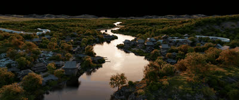
3ds Max背景制作チュートリアル「Japanese River」制作者による、他の作品。

3ds Maxを使った背景制作のチュートリアル「Japanese River」。詳細な解説のため、3ds Maxを使っていなくても学べる内容が多いとしている。

ゲーム環境における汚れや風化の表現について解説する動画「Weathering & Grime in Game Environments」。物理法則に基づいたシェーディングを学べる内容。

SpeedTreeをゼロから解説するチュートリアル「Speedtree 10 - Zero to Hero」。SpeedTreeのチュートリアルは少ないため貴重だとしている。

地形の3Dスキャンモデルを購入できるサイト「The Terrain Domain」。Megascansにはないような地形も多く扱っている。

Steven Croman氏のArtStationページ。クオリティの高い背景作品が多く掲載されている。

ILMやAxis Studioに在籍していたSteven Croman氏による3D Matte Paintingのチュートリアル。DMP（デジタルマットペイント）のチュートリアルは少ないため貴重だとしている。

作品「Whispers of the Forgotten Temple」の制作プロセスを解説したブレイクダウン。Houdiniが様々な箇所で使用されている。

Yen Chen氏のArtStationページ。クオリティの高い背景作品が多く掲載されている。

ILMのGeneralist、Yen Chen氏が自身の作品制作に使用したHDA「CH Tools」を無料公開していること。Scatterに重要な機能が多く含まれている。
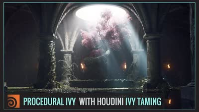
Ivy Tamingプラグインの使い方を、Adrien Lambert氏が丁寧に解説した動画。

HoudiniでIvy（ツタ）を生成できるHDA「Ivy Taming 1.1」。『The Last of Us』などハリウッドのプロダクションでも使用されている。

個人制作でSolarisを使いたい人向けのチュートリアル「LOPs for Solo Artists」。

Adrien Lambert氏による、マスクを作成できるHoudini用HDA「AL MASKBUILDER」。ScatterやShadingで使えるマスク作成機能が詰まっている。

靴やカメレオンなどをテーマにしたテクスチャリングのチュートリアル。Substance Painterの使い方が参考になり、背景制作にも活かせるとしている。

HoudiniのInstanceについて体系的に理解するのに役立った記事「An Even Longer-Winded Guide to Instancing in Houdini」。

今川雅史氏による都市の背景制作チュートリアル「Cinematic Shot Design | Modern city」。カメラシェイクを加える方法にも触れられている。

Samuel A Krug氏による地形生成HDA「KTT for Houdini」。従来のHoudiniやGaeaでは難しい表現が可能になるとしている。
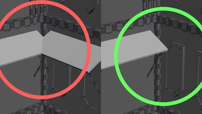
Forループでポイントにジオメトリをコピーする際、既に置いたものと交差する配置を弾いて重なりを防ぐHoudiniの手法解説。

Anthony Eftekhari氏による3D Matte Paintingのチュートリアル。主にMaya、3ds Max、Photoshopを使用する。

HoudiniでのLattice操作を簡単にするHDA「Lattice_B for Houdini」。

Blizzard EntertainmentのSenior Art Director、Anthony Eftekhari氏による構図とデザインについての無料チュートリアル「Composition & Staging Series」。

Houdini Solaris向けのライティングテンプレート。単一ショット用だけでなく複数ショット用のテンプレートもある。

OpacityMapを使ってメッシュをカットアウトできるプラグイン「YL Atlas Cutter」。

MegascansのアセットをUSDに変換し、LookDevまで行えるHoudini用のHDAツール。

安藤恵美氏によるUSD/Solarisについての講演動画。2018年のものだが、USDの基本概念の理解が深まる内容。

Ian Hubert氏の「Lazy Tutorials」シリーズから、Blenderで都市を組み上げる回。1分強で手順だけを一気に見せる構成。

ILMロンドン所属のGeneralist、Yen Chen氏による作品の制作プロセス。使用ソフトはHoudini、Nuke、および（現在は使用できない）Clarisse。

80lvに掲載された、『The Witcher 3』に着想を得た雪景色シーンの制作記事。大規模な自然系背景制作に役立つTipsがまとめられており、使用ソフトはUnreal Engineがメイン。

Steffen Hampel氏による、「Japanese Alley」という作品を制作するWingfoxのチュートリアル。MayaとV-Rayがメインに使用されている。
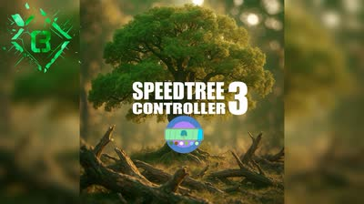
SpeedTreeでアニメーションやシミュレーションを行えるプラグイン。

HoudiniでMegascansのAtlas機能を使って葉っぱのアセットを作成する手法。この手法はゲーム『アサシンクリード』でも使用されている。Megascansは葉っぱ系アセットの種類が少ないため、こうしたテクニックが役立つとしている。

Blender、RealityScan、UE5、Nukeを使ったシーン制作のチュートリアル。Houdiniとは異なるワークフローだが、背景制作に通じる部分が多いとしている。

背景制作に定評のあるBaptiste氏が制作した作品のBlenderファイル。

The Rookies 2024優勝者であるAntoine Barbannaud氏によるチュートリアル。複数のソフトを組み合わせた高品質な内容で、背景制作のワークフロー学習におすすめとしている。
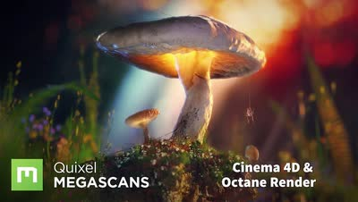
Alexander Maltsev氏が受賞作「Mighty」をMegascansとCinema 4Dで作り、Octaneでレンダリング、Fusionで合成するまでを10パートで解説した40分の講座。
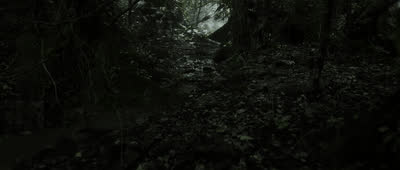
ILMのJunior GeneralistであるLucas Piazzini氏のXアカウント。ArtStationでの詳しい背景制作解説に加え、コンテスト「Rampage Rally」で3位に入賞した作品も紹介されている。
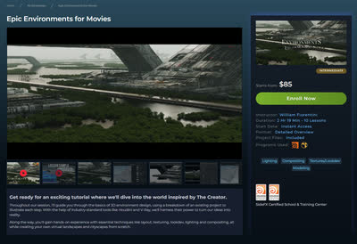
Double Jump Academyで公開されている、William氏によるHoudiniを使った背景制作のチュートリアル「Epic Environments」と「Environments for Beginners」。

ILMのGeneralist William Fiorentini氏によるチュートリアル。背景制作のTipsが詰まっており、fogアセットも付属する。

HoudiniのLOPsとSolarisについて詳しくまとめられた英語記事（cgwiki）。

80lvに掲載された記事と、RebelwayでEnvironment Creation in Houdiniコースを担当するJames Hodgart氏。

映画『The Creator』に着想を得たシーンの地形デザインについて解説する80lvの記事。

Megascansを使ってフォトリアルな3Dシーンを制作する手法を解説した80lvの記事。

Houdiniを使った環境アート制作について、穏やかな漁村シーンのセットアップを例に解説する80lvの記事。

大規模な2D環境をHoudiniとNukeを使って3Dで再現する手法を解説した80lvの記事。

80lvに掲載された、Houdiniを使った背景制作ワークフローの記事。地形生成から建物配置、USDでのコンポジションまで解説されている。

背景制作に欠かせないScatterツール。木川氏の記事を基に、いくつか機能を追加して作成した。詳細はNotionページにまとめられている。
ウェブ上の写真素材を使って、実写の背景を作り替えるマットペイントのセットエクステンションを解説した33分のチュートリアル。
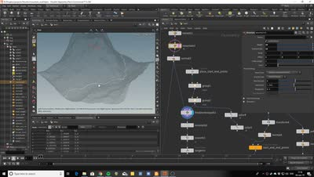
斜度をコストとして扱いながらパスを求め、その道路ジオメトリで地形自体を変形させるHoudiniのセットアップデモ。hipファイルも配布されている。